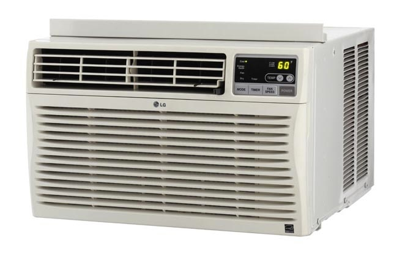

Our group has decided to use an air conditioner unit as our product.
An air conditioner cools your home with a cold indoor coil called the evaporator. It is mostly used in hotter areas of the world. Almost everyone in areas with hot temperatures use air conditioning. It is most commonly used to cool down buildings, such as homes, office buildings, recreation centers, etc. Without air conditioning, our homes would be very hot and very uncomfortable.
There are many companies that create air conditioning units. For example, some big ones are Trane, Lg, Carrier, and GE. Most of these companies make all of their own parts. Carrier sells full air conditioning units, or you can buy separate parts to repair your own air conditioner. The same goes for the above manufacturers. They all have different engineers working for them to create the parts necessary for the air conditioner. These parts can either be sold separately or sold as a whole unit.
The vapor-compression cycle is used in most household refrigerators as well as in many large commercial and industrial refrigeration systems. In this cycle, a circulating refrigerant such as Freon enters the compressor as a vapor. The vapor is compressed at constant entropy and exits the compressor superheated. The superheated vapor travels through the condenser which first cools and removes the superheat and then condenses the vapor into a liquid by removing additional heat at constant pressure and temperature. The liquid refrigerant goes through the expansion valve (also called a throttle valve) where its pressure abruptly decreases, causing flash evaporation and auto-refrigeration of, typically, less than half of the liquid. That results in a mixture of liquid and vapor at a lower temperature and pressure. The cold liquid-vapor mixture then travels through the evaporator coil or tubes and is completely vaporized by cooling the warm air (from the space being refrigerated) being blown by a fan across the evaporator coil or tubes. The resulting refrigerant vapor returns to the compressor inlet to complete the thermodynamic cycle. Chemical engineers are the ones who help apply these principles in the production of air conditioners. Without chemical engineers, the science behind why air conditioners actually work would not be understood. Since they understand though, they are able to help create the air conditioners to be most efficient

Industrial engineers works to combine the engineering and business parts of a product(AC). The most important task of industrial engineering is the management of the whole company and the improvement of productivity. The company will improve productivity and sales with the help of industrial engineering since it use engineering method into the control over the company.
Mechanical engineers are in charge of creating all of the parts for the air conditioning unit. Today, a lot of parts are created through 3D printers. The mechanical engineers design these parts in some sort of CAD program and then print them out. In all, mechanical engineers are used to design these parts to be the most efficient, both cost wise and energy wise.
Electrical engineers help to wire the air conditioners and make them work. for example, when an air conditioner is installed to a home or building, electrical engineers help with all of the wiring required.
One class that would be helpful in creating an air conditioning unit would be an ME class that uses a CAD program. For example, ME170 uses Creo to design parts, and these parts can be printed to a 3D printer. At the end of the year, there is a project to create your own product. While an air conditioner unit is probably too advanced to be created in ME170, that can be one ofthe possible projects a student chooses to work on. A thermodynamics class would also be helpful in learning more about creating an air conditioner. These thermodynamics classes can teach many of the principles a chemical engineer would need to know in order to help create an AC unit. ME 300 would be a good class to take because it covers the topic of heat transfer. There is also another class that would help us about the design of the reactor. The CHBE 424 teaches the interrelationship between transport, thermodynamics, and chemical reaction in open and closed systems. It will be a useful course for the heat transporting part in air conditioner.